library(tree); library(randomForest)randomForest 4.7-1.2Type rfNews() to see new features/changes/bug fixes.library(VSURF)
#######################################################################################
#Dyadic IV Analyses
#######################################################################################
#Random Forest for Male Dyadic Desire, Sample A
Background_MDyadic_SampleA <- read.csv(file="Level 1 predicting Male Dyadic Desire, Sample A.csv", header=T)
set.seed(605)
SampleA_DyadicMale_VSURF <- VSURF(DiggingRel~., data=Background_MDyadic_SampleA, na.action=na.omit, ntree=5000)Thresholding step
Estimated computational time (on one core): 373.6 sec.
|
| | 0%
|
|==== | 5%
|
|======= | 10%
|
|========== | 15%
|
|============== | 20%
|
|================== | 25%
|
|===================== | 30%
|
|======================== | 35%
|
|============================ | 40%
|
|================================ | 45%
|
|=================================== | 50%
|
|====================================== | 55%
|
|========================================== | 60%
|
|============================================== | 65%
|
|================================================= | 70%
|
|==================================================== | 75%
|
|======================================================== | 80%
|
|============================================================ | 85%
|
|=============================================================== | 90%
|
|================================================================== | 95%
|
|======================================================================| 100%
Interpretation step (on 4 variables)
Estimated computational time (on one core): between 0.4 sec. and 1.5 sec.
|
| | 0%
|
|================== | 25%
|
|=================================== | 50%
|
|==================================================== | 75%
|
|======================================================================| 100%
Prediction step (on 1 variables)
Maximum estimated computational time (on one core): 0.1 sec.
|
| | 0%
|
|======================================================================| 100%Warning in VSURF.formula(DiggingRel ~ ., data = Background_MDyadic_SampleA, : VSURF with a formula-type call outputs selected variables
which are indices of the input matrix based on the formula:
you may reorder these to get indices of the original datasummary(SampleA_DyadicMale_VSURF)
VSURF computation time: 6.6 mins
VSURF selected:
4 variables at thresholding step (in 6.6 mins)
1 variables at interpretation step (in 1.2 secs)
1 variables at prediction step (in 0.2 secs)SampleA_DyadicMale_VSURF$varselect.thres[1] 250 222 17 259SampleA_DyadicMale_VSURF$varselect.interp[1] 250SampleA_DyadicMale_VSURF$varselect.pred[1] 250ncol(Background_MDyadic_SampleA)[1] 363#Sample A Male Dyadic Model, no variable selection
set.seed(45)
Background_MDyadic_SampleA.allpredictors <- randomForest(DiggingRel~., data=Background_MDyadic_SampleA, importance=T, na.action=na.omit, ntree=5000)
Background_MDyadic_SampleA.allpredictors
Call:
randomForest(formula = DiggingRel ~ ., data = Background_MDyadic_SampleA, importance = T, ntree = 5000, na.action = na.omit)
Type of random forest: regression
Number of trees: 5000
No. of variables tried at each split: 120
Mean of squared residuals: 2.02326
% Var explained: -14.83importance(Background_MDyadic_SampleA.allpredictors) %IncMSE IncNodePurity
Anxiety -0.284806460 8.2976725
Avoidance -2.675221888 3.9389807
SocioCount -3.416023416 6.7130092
SocioScale -3.792040275 7.2972717
MateValue -0.441264211 6.0121402
ASIBS -2.991521126 5.8890834
ASIHS -2.158795323 5.8707817
Lim 0.409457959 5.6714096
Traditional -0.887542992 4.6443335
SexDrive -3.921659525 4.8613104
Conservatism -2.780222196 5.8100051
PartnerConserv -1.203777527 5.6786393
RecipLike -4.671510778 5.6130605
Desperation -4.056903042 5.7282070
Destiny -4.471993276 6.2653802
Growth -3.506954936 6.6696175
SelfClarity 0.141022490 7.7127680
IdealSelfClarity -2.706238935 4.5946243
NeedBelong -3.218471572 6.2043630
ApproachGoal -3.449683915 3.0897734
AvoidGoal 1.496026212 4.8569931
Forgiveness -1.696040563 5.5071203
Lonely -1.192813193 5.9916092
SelfEsteem 0.733115500 6.3571780
SelfControl -3.360502223 6.0881770
SWBTot -0.356387133 4.3285903
SelfRespect -1.993658726 4.0069798
Entitlement 0.757779045 7.5888222
RelatSelfConstrual -0.854744260 4.5911272
IndepSelfConstrual -2.368241699 3.2500804
RISC -4.706709698 4.7102151
CISC -3.041265217 4.4344787
RejectionSen -1.135084231 4.1238431
IDSTot -2.851512892 5.2290862
WITot -3.794040006 4.7004392
ISWTot -0.955815994 4.5050845
ComTot 0.405665806 4.3312131
Narcissism -1.265764918 5.6721376
Promotion -1.938577533 3.8927763
Prevention -2.310455648 5.5328306
EmoExpression -0.898114638 3.7135073
Locomotion -3.790828846 5.8266811
Assessment -1.840168985 6.0207749
Capitalization -1.184868510 5.0934826
Extraversion -3.164869076 5.2942827
Agreeable 0.820341723 4.6104190
Conscientious -1.541787684 4.9232890
Neurotic -1.421740755 6.6900360
Openness 0.007837769 3.0196594
ASPhysHot -2.017820772 4.5404156
ASEarnAmbit -1.622856959 3.7573290
ASVitality -1.520715020 3.4922063
ASWarm -3.523379403 3.8248369
ASDom 1.181386184 4.7051800
ISPhysHot -3.347543558 2.9702550
ISEarnAmbit -0.805369710 2.4675607
ISVitality -0.642254891 2.2019785
ISWarm -0.922945497 2.6547918
ISDom -2.226015610 3.5550475
IPPhysHot -2.848025585 2.4610601
IPEarnAmbit -2.011508004 3.3370131
IPVitality -0.495045630 2.6127537
IPWarm -1.484413009 3.1689311
IPDom -2.936096091 4.5995092
FourminPhysHot -0.260356521 3.3680683
FourminEarnAmbit -3.457042091 6.2598276
FourminVitality -2.419743951 3.6941040
FourminWarm -3.242026225 5.5741867
FourminDom -1.909449514 4.0386930
FourminLiked -2.105081843 2.7760211
FourminChemistry -3.679706402 5.6921871
FourminpLiked -4.891503083 4.1340514
DesirSer -3.797704724 3.7909914
DesirCas -3.662461425 3.3106686
DesirOne -2.816630341 3.8457472
SatPeop -3.435348397 3.0773655
YouInt_1 -2.693460968 4.6594364
ThemInt_1 -2.588695895 6.8799996
Init1 0.099690841 3.3270565
Init2 -2.181901388 3.0704204
Init3 -2.414523452 3.4816317
MStrat1 -0.969770585 4.4563256
MStrat2 -2.779751311 2.6800438
MStrat3 -2.620190889 2.8632051
MStrat4 -1.134495985 2.9014182
MStrat5 1.376557749 3.1415774
MStrat6 1.195888673 3.5751791
MStrat7 -0.813030176 5.2931818
MStrat8 -1.153460755 2.2301294
Gender1 -3.629352882 3.9768234
Gender2 -2.339875600 3.4164426
SexOr -0.613990182 2.9895838
Pragma -3.020056728 4.2949963
Ludus -1.011469459 3.2232713
Storge -1.275272502 3.4754286
MyStatus -1.712870594 2.8713905
Reci3 -1.020527563 3.0184916
Reci4 -0.559106873 3.1562248
Health -2.906961890 3.7357925
Sleep -2.045840350 4.9056852
PA1 1.102216706 2.9672255
PA2 -0.504320166 2.7165259
PA3 0.326426339 5.4256385
NA1 -1.159675968 5.1579036
NA2 -0.061159773 3.0285416
NA3 -3.756700847 4.2093504
SVal1 -1.179491154 3.6842345
SVal2 -0.810766783 1.2378579
SVal3 -0.842598116 2.2290086
SVal4 -2.229140121 2.7462823
SVal5 -1.929710858 2.9450600
SVal6 0.742889746 2.0845680
SVal7 -0.858662564 2.8830939
SVal8 -0.462978337 3.4265950
SVal9 -0.855114416 4.5325559
SVal10 -3.178394352 2.7051626
SVal11 -1.965063361 3.7843880
SVal12 -1.796913809 2.4792600
SVal13 -2.916591883 3.8212149
SVal14 -1.189518891 3.6384848
SVal15 -0.252825242 2.0860823
SVal16 -1.965878331 1.6189534
SVal17 -1.890489155 5.2542947
AS12 -3.183890144 1.7527805
AS13 -1.927493416 3.4021931
AS14 -2.545516715 5.0113128
AS15 0.545631992 2.1914809
AS16 -0.869951097 3.6433557
AS17 -0.882356210 2.3187198
AS18 -1.477180049 3.2514967
AS19 0.652289683 2.6716568
AS20 -0.863140021 3.7314669
AS21 -1.423430754 3.2301004
AS22 -2.637465964 3.9628633
AS23 -0.585216652 3.0608895
AS24 -3.354832497 3.5341556
AS25 0.345764827 2.3895851
AS26 -3.233113420 3.7579001
AS27 -3.358612620 4.9194943
AS28 -0.724838929 3.0291278
AS29 -0.938665591 2.6545070
AS30 -2.386680160 2.2166198
AS31 0.061232440 2.9417166
AS32 -2.377507358 3.1990240
IP17 -1.273185082 2.8590723
IP18 2.202975817 2.6018845
IP19 -0.300962447 2.7895352
IP20 -0.553751433 2.3063254
IP21 -3.510112396 3.0609593
IP22 0.315055253 2.1586834
IP23 0.369180199 2.2121299
IP24 -1.054433639 2.7612122
IP25 -1.903085996 1.4368786
IP26 -3.680833309 4.0062477
IP27 -1.303901391 2.2424149
IP28 -2.205443478 2.1101700
IP29 -0.002230130 3.4350102
IP30 -2.536705874 1.3887258
IP31 0.052651083 1.8721604
IP32 -0.677502938 2.5759923
IS17 -1.136812298 2.2715849
IS18 -2.401011272 2.4280279
IS19 -3.111366159 3.0489142
IS20 -2.422322972 1.2851650
IS21 -0.035662900 1.3195394
IS22 -0.115507758 1.9229102
IS23 -1.540319886 1.5601501
IS24 -1.643234616 2.6434934
IS25 -1.368151290 1.9914679
IS26 -0.271369851 2.4642667
IS27 -0.401541387 3.0204907
IS28 -2.365095756 1.4420222
IS29 -2.574408169 2.9699737
IS30 -1.104776284 1.7316621
IS31 -1.989838362 2.2366235
IS32 -1.357085123 1.8093917
X.4min12 0.565580803 3.5967955
FAnxiety -2.629608449 5.4104035
FAvoidance -3.168064924 4.5212397
FSocioCount -4.119188079 5.5211366
FSocioScale -2.633418199 5.8782207
FMateValue -3.834588028 6.4432784
FASIBS -4.033372742 4.5125648
FASIHS -2.131454466 5.8280263
FLim -3.742360133 5.9069939
FTraditional -1.549791976 4.2277689
FSexDrive -0.073404474 3.7777272
FConservatism -2.761820185 4.5705868
FPartnerConserv -1.444972311 5.2690361
FRecipLike -3.594577978 4.5754011
FDesperation -2.811514080 5.6974980
FDestiny -0.236557340 5.6100934
FGrowth -1.563273718 6.3156941
FSelfClarity -3.324081254 6.2942733
FIdealSelfClarity -1.332934162 4.3992571
FNeedBelong -2.644571716 5.2980649
FApproachGoal 0.855620416 4.3255002
FAvoidGoal -4.813550886 4.4353990
FForgiveness -0.982266299 4.6153967
FLonely -1.114757385 5.0513413
FSelfEsteem -2.815332308 4.5564216
FSelfControl -3.372719961 4.9636481
FSWBTot -0.943310136 4.5367363
FSelfRespect -3.208542721 3.6970599
FEntitlement -2.463498748 5.5569956
FRelatSelfConstrual -3.203409609 3.9027776
FIndepSelfConstrual -2.770900953 3.1033233
FRISC -2.065703055 4.7585425
FCISC -0.876656214 5.0753792
FRejectionSen -1.886338901 4.2391717
FIDSTot -3.612064421 4.3636081
FWITot -3.315190125 4.2893662
FISWTot -2.586622950 3.1642750
FComTot 0.236360631 5.5006881
FNarcissism -1.579785511 4.9851521
FPromotion -5.415846468 4.5151911
FPrevention -1.626794426 3.8575091
FEmoExpression 0.706366135 2.4258735
FLocomotion -2.166312945 4.2689584
FAssessment -1.173153569 5.8549418
FCapitalization -1.978327129 3.5302286
FExtraversion 3.061697008 5.8526931
FAgreeable -2.682696575 4.7459523
FConscientious -2.003247363 4.2416062
FNeurotic -3.714472237 5.8033268
FOpenness -3.713891766 3.7123917
FASPhysHot -3.207797486 5.4957734
FASEarnAmbit -2.532237165 3.3932222
FASVitality -2.387660373 4.0778769
FASWarm -0.714923401 3.8639101
FASDom -1.911278155 4.9048237
FISPhysHot 0.670948694 4.0743231
FISEarnAmbit -1.358777721 3.8064991
FISVitality -3.031419026 2.9896785
FISWarm 1.655637094 3.0024117
FISDom -0.349466222 3.7541242
FIPPhysHot -2.748619661 4.4899941
FIPEarnAmbit -0.029440410 4.4133628
FIPVitality -1.670862523 3.5131018
FIPWarm 1.244336746 3.2041636
FIPDom -0.110174855 3.6844061
FFourminPhysHot -0.726811637 4.2610799
FFourminEarnAmbit -4.807787377 5.1585152
FFourminVitality -4.127036115 4.0701520
FFourminWarm -2.219072544 5.0635131
FFourminDom -2.278702197 3.4748033
FFourminLiked -0.134794736 4.0361695
FFourminChemistry -2.643769440 5.3325450
FFourminpLiked -1.229394242 5.6058932
FDesirSer 2.983017301 9.8847651
FDesirCas -0.405766333 4.7057685
FDesirOne -0.697812925 2.2405026
FSatPeop -3.552440366 2.8269543
FYouInt_1 -2.174619999 4.4970446
FThemInt_1 -2.275644051 4.6726769
FInit1 -0.737396221 2.7698439
FInit2 -3.238934550 4.0200226
FInit3 -1.491339476 3.1913771
FMStrat1 2.634073396 4.7342111
FMStrat2 -4.754612566 3.5959159
FMStrat3 -0.591230297 2.4440374
FMStrat4 -0.960764103 2.3448454
FMStrat5 -0.292789227 2.1388318
FMStrat6 -2.971978975 3.5431551
FMStrat7 -1.735116470 2.3697626
FMStrat8 -1.429235517 3.5981661
FGender1 0.015761288 3.0687031
FGender2 -2.301901010 3.5012757
FSexOr -0.471669596 1.3351978
FPragma 2.063204358 4.2667825
FLudus -1.767434096 4.8077160
FStorge -0.922563542 3.3752162
FMyStatus 0.997069434 3.2213590
FReci3 -2.149201550 2.7387324
FReci4 -3.429653149 4.2802199
FHealth -1.631562808 2.8513663
FSleep -2.745425914 3.7648050
FPA1 -2.074730205 2.2023122
FPA2 -0.194456627 1.7430098
FPA3 -2.670742749 2.8495974
FNA1 -1.973330770 3.1956131
FNA2 -3.341683062 2.4248811
FNA3 -1.250283167 4.0274775
FSVal1 -3.516752407 2.0502169
FSVal2 -2.111019746 1.8983559
FSVal3 -3.612742912 2.0244698
FSVal4 -3.649964067 2.2684439
FSVal5 -2.604081811 2.2720622
FSVal6 -2.036699408 2.2627666
FSVal7 -0.668401696 2.0516065
FSVal8 -2.158237775 2.8267179
FSVal9 -2.267073482 3.3211502
FSVal10 -0.456997725 3.7895723
FSVal11 -3.580583426 3.8131857
FSVal12 -0.497715603 2.6129911
FSVal13 -1.734105183 2.4202924
FSVal14 -0.978656321 2.8795743
FSVal15 -1.222157016 2.1598940
FSVal16 0.092644576 1.8604820
FSVal17 -0.683410977 3.7216290
FAS12 -1.229147746 1.9946711
FAS13 0.074428660 3.5457884
FAS14 -0.378549773 4.2779660
FAS15 0.528496942 2.8833753
FAS16 -2.052930301 4.1365267
FAS17 0.146308865 3.4108326
FAS18 -1.296386808 4.9388070
FAS19 -2.109250289 4.0007611
FAS20 -2.065493452 2.4325525
FAS21 0.175184614 3.4805038
FAS22 -0.856829928 4.6823470
FAS23 0.301494713 3.1101953
FAS24 -2.437417902 3.1103786
FAS25 0.315838652 2.3054757
FAS26 -3.835913175 3.7920955
FAS27 -1.176133541 3.4928702
FAS28 -0.945739595 3.2503088
FAS29 -0.092716952 3.6006903
FAS30 -1.878336560 2.9075855
FAS31 -3.182508771 3.8308912
FAS32 -3.645779286 2.4397324
FIS17 0.915906006 2.9448372
FIS18 -0.314648488 2.8833062
FIS19 -1.912586797 2.9941004
FIS20 -0.754977499 1.6377287
FIS21 -1.005332359 2.7170765
FIS22 -1.448164467 1.9828925
FIS23 -0.857380724 2.0610697
FIS24 -1.733867554 3.4823833
FIS25 -0.594578767 1.9695220
FIS26 -1.847737855 2.5292894
FIS27 -0.499404739 3.3215949
FIS28 -2.005588865 1.9467665
FIS29 -2.270822403 3.1897188
FIS30 -0.921733857 1.1585201
FIS31 -0.201040145 1.8734866
FIS32 -2.036134100 2.3640278
FIP17 -0.095478084 3.3228770
FIP18 -3.698732852 3.0757393
FIP19 1.589006440 2.1061725
FIP20 -1.750299912 2.0371243
FIP21 0.323933359 3.8316800
FIP22 -1.651113671 1.9931002
FIP23 -2.350044910 2.1387722
FIP24 -0.688090473 2.9863965
FIP25 0.110718151 2.2444510
FIP26 -2.674895990 2.5850409
FIP27 -2.267917877 3.0256607
FIP28 0.384068524 2.8802949
FIP29 -1.652307432 3.8945603
FIP30 -1.458285137 1.0376996
FIP31 -0.834677475 1.7612972
FIP32 -1.516643486 2.6507232
F4min12 -2.861790188 3.4781286
IP12 -3.521562654 1.4194916
FIP12 -1.262856981 2.1741399
IS12 -0.422721251 0.8295352
FIS12 -0.967160490 1.3310721
statustot -3.395348927 8.0479875
Fstatustot -0.735560021 4.7936606
attracttot -3.241353470 4.5180209
Fattracttot -3.826401925 5.0609774varImpPlot(Background_MDyadic_SampleA.allpredictors)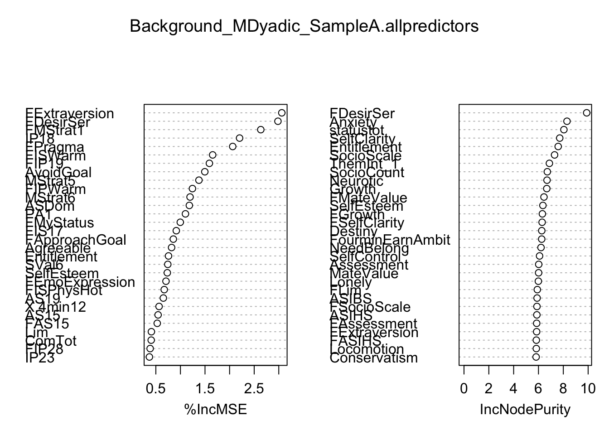
#Sample A Male Dyadic model, threshold variables
SampleA_DyadicMale.thresdata <- Background_MDyadic_SampleA[c(250,222,17,259,24,240,103,270,235,46,102,312,87,346,251,88,363)]
set.seed(605)
SampleA_DyadicMale.thresmodel <- randomForest(DiggingRel~., data=SampleA_DyadicMale.thresdata, importance=T, na.action=na.omit, ntree=5000)
SampleA_DyadicMale.thresmodel
Call:
randomForest(formula = DiggingRel ~ ., data = SampleA_DyadicMale.thresdata, importance = T, ntree = 5000, na.action = na.omit)
Type of random forest: regression
Number of trees: 5000
No. of variables tried at each split: 5
Mean of squared residuals: 1.899094
% Var explained: -4.52importance(SampleA_DyadicMale.thresmodel) %IncMSE IncNodePurity
FDesirSer 24.626919 78.52844
FExtraversion 19.437959 100.35149
SelfClarity 21.859527 136.58551
FMStrat1 11.726928 83.31749
SelfEsteem 10.006659 131.78951
FIPWarm 11.685245 80.26159
PA3 13.348077 98.57623
FPragma 8.078731 84.05927
FISWarm 16.587528 79.75960
Agreeable 11.950504 115.15833
PA2 20.194127 88.32187
FAS23 15.523922 70.20022
MStrat6 20.502682 89.46597
FIP25 14.051734 71.57129
FDesirCas 5.278479 73.24362
MStrat7 16.431664 99.09739varImpPlot(SampleA_DyadicMale.thresmodel)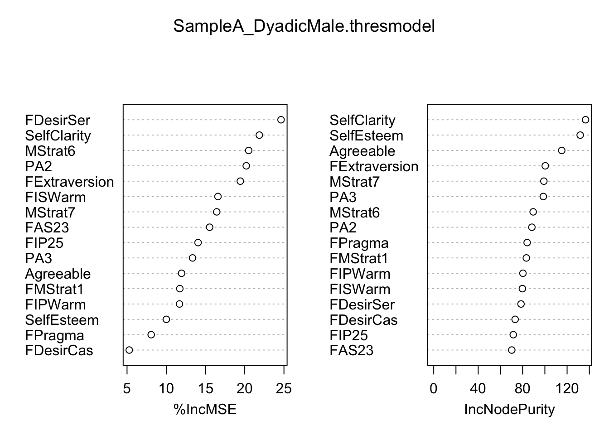
#Sample A Male Dyadic model, interpretation variables
SampleA_DyadicMale.interpdata <- Background_MDyadic_SampleA[c(250,363)]
set.seed(605)
SampleA_DyadicMale.interpmodel <- randomForest(DiggingRel~., data=SampleA_DyadicMale.interpdata, importance=T, na.action=na.omit, ntree=5000)
SampleA_DyadicMale.interpmodel
Call:
randomForest(formula = DiggingRel ~ ., data = SampleA_DyadicMale.interpdata, importance = T, ntree = 5000, na.action = na.omit)
Type of random forest: regression
Number of trees: 5000
No. of variables tried at each split: 1
Mean of squared residuals: 1.820005
% Var explained: -0.17importance(SampleA_DyadicMale.interpmodel) %IncMSE IncNodePurity
FDesirSer 53.90564 33.83021varImpPlot(SampleA_DyadicMale.interpmodel)#Sample A Male Dyadic model, prediction variables
SampleA_DyadicMale.preddata <- Background_MDyadic_SampleA[c(250,363)]
set.seed(605)
SampleA_DyadicMale.predmodel <- randomForest(DiggingRel~., data=SampleA_DyadicMale.preddata, importance=T, na.action=na.omit, ntree=5000)
SampleA_DyadicMale.predmodel
Call:
randomForest(formula = DiggingRel ~ ., data = SampleA_DyadicMale.preddata, importance = T, ntree = 5000, na.action = na.omit)
Type of random forest: regression
Number of trees: 5000
No. of variables tried at each split: 1
Mean of squared residuals: 1.820005
% Var explained: -0.17importance(SampleA_DyadicMale.predmodel) %IncMSE IncNodePurity
FDesirSer 53.90564 33.83021varImpPlot(SampleA_DyadicMale.predmodel)#Random Forest for Male Dyadic Desire, Sample B
Background_MDyadic_SampleB <- read.csv(file="Level 1 predicting Male Dyadic Desire, Sample B.csv", header=T)
Background_MDyadic_SampleB$getoutoffun <- factor(Background_MDyadic_SampleB$getoutoffun)
Background_MDyadic_SampleB$getoutoftry <- factor(Background_MDyadic_SampleB$getoutoftry)
Background_MDyadic_SampleB$getoutofmeet <- factor(Background_MDyadic_SampleB$getoutofmeet)
Background_MDyadic_SampleB$getoutofscience <- factor(Background_MDyadic_SampleB$getoutofscience)
Background_MDyadic_SampleB$getoutofltfind <- factor(Background_MDyadic_SampleB$getoutofltfind)
Background_MDyadic_SampleB$getoutofstfind <- factor(Background_MDyadic_SampleB$getoutofstfind)
Background_MDyadic_SampleB$Fgetoutoffun <- factor(Background_MDyadic_SampleB$Fgetoutoffun)
Background_MDyadic_SampleB$Fgetoutoftry <- factor(Background_MDyadic_SampleB$Fgetoutoftry)
Background_MDyadic_SampleB$Fgetoutofmeet <- factor(Background_MDyadic_SampleB$Fgetoutofmeet)
Background_MDyadic_SampleB$Fgetoutofscience <- factor(Background_MDyadic_SampleB$Fgetoutofscience)
Background_MDyadic_SampleB$Fgetoutofltfind <- factor(Background_MDyadic_SampleB$Fgetoutofltfind)
Background_MDyadic_SampleB$Fgetoutofstfind <- factor(Background_MDyadic_SampleB$Fgetoutofstfind)
set.seed(605)
SampleB_DyadicMale_VSURF <- VSURF(DiggingRel~., data=Background_MDyadic_SampleB, na.action=na.omit, ntree=5000)Thresholding step
Estimated computational time (on one core): 352 sec.
|
| | 0%
|
|==== | 5%
|
|======= | 10%
|
|========== | 15%
|
|============== | 20%
|
|================== | 25%
|
|===================== | 30%
|
|======================== | 35%
|
|============================ | 40%
|
|================================ | 45%
|
|=================================== | 50%
|
|====================================== | 55%
|
|========================================== | 60%
|
|============================================== | 65%
|
|================================================= | 70%
|
|==================================================== | 75%
|
|======================================================== | 80%
|
|============================================================ | 85%
|
|=============================================================== | 90%
|
|================================================================== | 95%
|
|======================================================================| 100%
Interpretation step (on 20 variables)
Estimated computational time (on one core): between 4.4 sec. and 44 sec.
|
| | 0%
|
|==== | 5%
|
|======= | 10%
|
|========== | 15%
|
|============== | 20%
|
|================== | 25%
|
|===================== | 30%
|
|======================== | 35%
|
|============================ | 40%
|
|================================ | 45%
|
|=================================== | 50%
|
|====================================== | 55%
|
|========================================== | 60%
|
|============================================== | 65%
|
|================================================= | 70%
|
|==================================================== | 75%
|
|======================================================== | 80%
|
|============================================================ | 85%
|
|=============================================================== | 90%
|
|================================================================== | 95%
|
|======================================================================| 100%
Prediction step (on 1 variables)
Maximum estimated computational time (on one core): 0.2 sec.
|
| | 0%
|
|======================================================================| 100%Warning in VSURF.formula(DiggingRel ~ ., data = Background_MDyadic_SampleB, : VSURF with a formula-type call outputs selected variables
which are indices of the input matrix based on the formula:
you may reorder these to get indices of the original datasummary(SampleB_DyadicMale_VSURF)
VSURF computation time: 6.6 mins
VSURF selected:
20 variables at thresholding step (in 6.2 mins)
1 variables at interpretation step (in 24.3 secs)
1 variables at prediction step (in 0.3 secs)SampleB_DyadicMale_VSURF$varselect.thres [1] 181 183 190 200 151 159 131 156 115 202 214 87 178 206 163 208 92 193 104
[20] 79SampleB_DyadicMale_VSURF$varselect.interp[1] 181SampleB_DyadicMale_VSURF$varselect.pred[1] 181ncol(Background_MDyadic_SampleB)[1] 223#Sample B Male Dyadic Model, no variable selection
set.seed(45)
Background_MDyadic_SampleB.allpredictors <- randomForest(DiggingRel~., data=Background_MDyadic_SampleB, importance=T, na.action=na.omit, ntree=5000)
Background_MDyadic_SampleB.allpredictors
Call:
randomForest(formula = DiggingRel ~ ., data = Background_MDyadic_SampleB, importance = T, ntree = 5000, na.action = na.omit)
Type of random forest: regression
Number of trees: 5000
No. of variables tried at each split: 74
Mean of squared residuals: 1.816838
% Var explained: -10.21importance(Background_MDyadic_SampleB.allpredictors) %IncMSE IncNodePurity
DesirLT -3.374732299 5.2388576
DesirST -0.868258255 4.9996144
getoutoffun 0.836146553 0.8774304
getoutoftry 6.186539115 1.8872580
getoutofmeet -2.308391244 0.7107266
getoutofscience -0.617774653 1.8385525
getoutofltfind -1.561387137 1.7449040
getoutofstfind -0.580362377 2.0239392
SatPeop -0.427785168 3.7115763
YouInt_1 -3.938933301 9.7024080
ThemInt_1 -0.558724611 7.9970495
MStrat3 -0.072872686 4.7467029
MStrat4 2.107347371 3.5241451
Init1 -0.840960074 3.6704602
Init2 1.631341519 5.7107287
Init3 -5.466828252 6.1960685
ASI2 0.333851317 7.0712539
ASI6 -0.583270300 6.1308452
SexOr 1.042848244 1.3945582
Pragma 3.763976951 11.7344182
Ludus -2.006821880 6.9394210
Storge -1.447174802 4.8278351
Status2 -0.226857478 6.2045372
Reci3 -0.754651952 5.3679655
Reci4 -0.846922011 5.7617671
NtB1 -1.234082582 4.1924898
Sleep -0.833449012 6.4468621
NUBelong -0.549047053 4.6799627
SR1 0.331956717 3.5303270
Affect1 -2.278384497 5.7671656
Affect2 -1.041457554 5.0130362
Affect3 -0.831580964 5.0710174
Affect4 -1.670593682 5.2849080
Loco1 -1.273355745 5.4243708
Ass1 -1.880614854 3.7759668
HOC1 -1.296977075 5.3644345
v4minI8 -3.129748970 6.7171485
v4minI9 0.254012127 3.5744439
FDesirLT -0.835608678 6.1904801
FDesirST -1.104309392 5.2122250
Fgetoutoffun -0.598907498 0.9646832
Fgetoutoftry -2.402426071 1.0506236
Fgetoutofmeet -3.225270025 0.3757152
Fgetoutofscience -0.396009342 1.7301201
Fgetoutofltfind 1.778046439 1.8963063
Fgetoutofstfind 1.228390837 1.9501280
FSatPeop -3.752826848 4.3017391
FYouInt_1 1.085303724 6.3885437
FThemInt_1 -3.370753882 7.3324872
FMStrat3 -2.593062379 3.6666855
FMStrat4 0.009092382 3.3498001
FInit1 3.248336540 4.8216732
FInit2 1.674472604 5.1929857
FInit3 -0.550406693 4.8793552
FASI2 -1.768285654 7.4330497
FASI6 -1.267754936 5.8895067
FSexOr -0.207514795 2.5779952
FPragma -6.591206963 11.3670429
FLudus -2.865223547 5.7870273
FStorge -2.391951924 5.6907797
FStatus2 -1.716213262 8.1367948
FReci3 -0.600470616 4.0679833
FReci4 -3.247036562 5.4782974
FNtB1 0.694661006 5.4526136
FSleep -0.201454930 5.7353023
FNUBelong -2.136822258 3.3105321
FSR1 2.921636547 3.5287787
FAffect1 -0.086496781 3.1390066
FAffect2 -1.044727057 4.9112836
FAffect3 0.575919297 5.3711590
FAffect4 -1.736875116 5.5228918
FLoco1 -2.083452658 5.7555707
FAss1 -1.362101724 4.2717896
FHOC1 -1.102893697 2.8154570
Fv4minI8 -0.667474493 6.8374104
Fv4minI9 0.540091077 4.2872583
Anxiety -7.169461551 13.1681790
Avoidance 3.463862577 12.0676411
SocioCount 0.578317676 15.8068317
SocioScale 0.718107449 11.2092422
MateValue -2.583460764 8.7592602
GenderIdentity 3.232147602 7.8988255
Traditional 2.083964925 10.4112549
SexDrive -0.846987727 7.7149283
AdversarialBeliefs -2.077510297 7.6345755
EmotionalIntell -3.354236504 8.4980109
Conservatism 4.124816419 10.3286123
PartnerConserv -0.656140544 10.8879977
RecipLike 0.739093873 8.6080944
Desperation -0.948540898 9.1609542
Destiny -2.791555159 12.0428036
Growth 2.383282910 8.2058491
SelfClarity -2.720320163 7.9902026
ApproachGoal 0.144311509 4.6972488
AvoidGoal -1.774369853 7.0527708
Forgiveness -1.010943396 9.7622170
Lonely 0.015763257 9.1474393
SelfEsteem -2.203826843 8.4005572
SelfControl -1.092226157 7.2086081
SWBTot -2.056960753 6.8645321
RelatSelfConstrual -0.841672644 9.2640844
IndepSelfConstrual -1.657940932 6.7486032
RejectionSen -1.759911250 5.3206294
Narcissism 2.638666005 9.9009380
Promotion -0.377169625 11.8240899
Prevention -1.995000522 13.7081238
LoveBasis -2.887440884 7.2960812
RomBeliefs 0.010474926 9.9807216
SocAnxiety -0.291205196 7.7969019
Optimism -0.249920552 6.6742291
Extraversion 2.142499714 10.6169394
Agreeable -1.687627917 8.7814274
Conscientious -2.205705771 10.7181233
Neurotic -0.304126568 10.5697682
Openness 4.268707821 10.4267835
ASPhysHot -2.367576167 6.4805933
ASEarnAmbit -0.480588980 6.9676579
ASVitality -0.125163186 5.1966360
ASWarm -1.001838754 6.4647877
ASDom -0.845006608 7.0173503
ASIntell -1.908900402 6.4900623
ASNegative -1.703505627 8.7313845
ISPhysHot -0.759162947 4.3840497
ISEarnAmbit -0.786046333 4.4462330
ISVitality -1.411387307 4.7688358
ISWarm 0.348075580 5.3126532
ISDom -0.066773945 5.7297153
ISIntell -0.658453822 3.0478488
OSPhysHot -0.635185911 9.0082556
OSEarnAmbit -2.976266138 7.7679027
OSVitality 2.309229150 10.4922073
OSWarm -1.649131872 6.5664062
OSDom 3.262541314 8.2832103
OSIntell -1.377341959 3.7053162
IPPhysHot -1.636037793 5.2778760
IPEarnAmbit 0.129490155 7.9394517
IPVitality -0.854106304 4.8469126
IPWarm -0.242037555 5.6409311
IPDom -2.565300117 7.6891031
IPIntell 2.107311280 5.0417298
FourminPhysHot 1.877247061 5.3466296
FourminEarnAmbit 1.195843324 8.8965430
FourminVitality -0.197959692 6.4664580
FourminWarm -2.259820677 8.0672298
FourminDom 1.427818804 8.6453386
FourminIntell 1.012109936 9.8212825
FourminLiked -0.057120116 5.5834631
FourminChemistry -1.832432267 7.9721021
FourminpLiked 0.200137055 7.4068675
FAnxiety -2.661152443 10.3280844
FAvoidance 5.220941948 16.4869854
FSocioCount 2.133116385 10.1451884
FSocioScale 0.067718699 9.1674650
FMateValue 3.274362473 9.1242453
FGenderIdentity -0.740734269 8.1422723
FTraditional 5.203438608 9.2905542
FSexDrive -1.023859852 7.6892039
FAdversarialBeliefs 0.518829186 6.8948511
FEmotionalIntell 2.746033386 10.2419083
FConservatism 0.090521271 8.4718919
FPartnerConserv -2.193229849 7.0476959
FRecipLike -1.156614517 7.5904500
FDesperation 2.176499491 8.5526822
FDestiny -2.632938764 12.0101858
FGrowth -1.436825618 7.0739781
FSelfClarity 1.433105694 10.9512429
FApproachGoal 2.635150605 6.3926197
FAvoidGoal -1.723439424 7.1526356
FForgiveness -1.699151955 10.9988968
FLonely 0.156772082 9.5414008
FSelfEsteem 1.763602814 7.5328690
FSelfControl -3.505576987 9.0331025
FSWBTot 0.199787626 5.3119308
FRelatSelfConstrual 0.500033485 8.9425006
FIndepSelfConstrual 2.100676678 5.9540862
FRejectionSen -0.799095903 6.5212860
FNarcissism -1.539447466 9.1351499
FPromotion 4.315101070 8.1292130
FPrevention -2.913157928 10.7365190
FLoveBasis -1.764830226 6.4919872
FRomBeliefs 0.495840920 16.6498599
FSocAnxiety -0.222369542 7.6127707
FOptimism 5.418422160 9.4112112
FExtraversion 1.303608477 10.9833673
FAgreeable -0.066828648 8.5626665
FConscientious -2.108890582 11.1175146
FNeurotic 1.453932539 10.4916191
FOpenness -0.932160727 7.3297864
FASPhysHot -2.759445569 7.2622447
FASEarnAmbit 6.441857356 8.0557831
FASVitality 0.716269161 6.7648283
FASWarm -0.616653185 6.9209189
FASDom 2.513615173 6.9638529
FASIntell 2.213596335 7.8903098
FASNegative 1.814657349 7.8258652
FISPhysHot -1.514862870 6.2281234
FISEarnAmbit 3.098280347 2.7708442
FISVitality 0.258519017 3.0802570
FISWarm 3.354605316 4.8370916
FISDom 4.982048346 7.4342618
FISIntell 0.437214319 2.5135929
FOSPhysHot 3.273625997 12.3345303
FOSEarnAmbit 2.007529186 2.9703812
FOSVitality -0.678054801 5.1274005
FOSWarm 2.351628609 4.5468502
FOSDom 3.477419454 7.3372760
FOSIntell 0.889127420 3.0201795
FIPPhysHot 2.493427624 7.8746707
FIPEarnAmbit 0.340594064 5.6393004
FIPVitality 2.140147316 3.7906172
FIPWarm 0.416557235 4.6286984
FIPDom 1.338527689 6.7340882
FIPIntell 1.572236363 4.4591960
FFourminPhysHot 2.154102122 11.3761621
FFourminEarnAmbit -0.985199618 9.3461372
FFourminVitality -3.534630255 6.1903678
FFourminWarm 2.814996715 10.0152182
FFourminDom 0.803790398 7.6620753
FFourminIntell -1.351235316 6.3992142
FFourminLiked 0.928505026 5.7829902
FFourminChemistry 1.037807817 6.1655136
FFourminpLiked -1.267825538 7.0225369varImpPlot(Background_MDyadic_SampleB.allpredictors)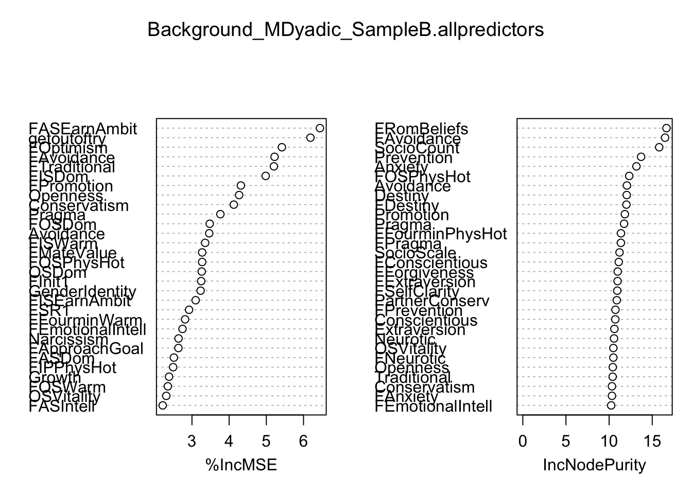
#Sample B Male Dyadic model, threshold variables
SampleB_DyadicMale.thresdata <- Background_MDyadic_SampleB[c(151,190,181,183,200,159,87,115,202,178,20,83,92,206,214,154,208,194,89,217,156,193,131,79,104,15,133,171,82,163,78,4,167,52,146,67,175,80,140,199,191,
197,147,212,192,64,184,166,152,215,203,195,223)]
set.seed(605)
SampleB_DyadicMale.thresmodel <- randomForest(DiggingRel~., data=SampleB_DyadicMale.thresdata, importance=T, na.action=na.omit, ntree=5000)
SampleB_DyadicMale.thresmodel
Call:
randomForest(formula = DiggingRel ~ ., data = SampleB_DyadicMale.thresdata, importance = T, ntree = 5000, na.action = na.omit)
Type of random forest: regression
Number of trees: 5000
No. of variables tried at each split: 17
Mean of squared residuals: 1.694668
% Var explained: -2.97importance(SampleB_DyadicMale.thresmodel) %IncMSE IncNodePurity
FAvoidance 11.521718 35.385477
FASEarnAmbit 20.080454 22.666506
FRomBeliefs 12.573648 37.082214
FOptimism 13.662649 26.132601
FISDom 12.294446 18.847494
FEmotionalIntell 9.398669 27.559870
Conservatism 9.556814 48.097723
Openness 2.150915 48.249327
FOSPhysHot 8.193900 28.728308
FPromotion 13.519998 24.342439
Pragma 9.136478 54.067895
Traditional 1.432271 43.753678
Growth 9.531896 42.967126
FOSDom 10.371449 18.890839
FFourminPhysHot 8.293954 25.991300
FMateValue 10.044100 24.806098
FIPPhysHot 12.440074 21.918476
FASIntell 11.413698 22.960277
RecipLike 5.324493 40.901051
FFourminWarm 9.847842 27.545293
FTraditional 9.369167 25.648706
FASDom 10.416941 21.507917
OSVitality 3.548383 46.056158
SocioCount 11.482618 62.047456
Narcissism 2.577839 54.865955
Init2 4.235833 29.575463
OSDom 7.907014 43.482267
FSelfEsteem 15.015216 24.673392
GenderIdentity 5.865344 41.676707
FDesperation 9.182598 23.114950
Avoidance 5.739594 57.888719
getoutoftry 7.969010 5.792427
FApproachGoal 7.480782 19.747513
FInit1 6.489606 14.355801
FourminIntell 3.131304 52.797280
FSR1 7.840974 10.662373
FIndepSelfConstrual 8.801066 19.114433
SocioScale 8.301805 53.819463
IPIntell 1.483686 31.769394
FISWarm 4.867641 13.209543
FASVitality 6.233967 18.980986
FISEarnAmbit 8.547124 9.361537
FourminLiked 5.335564 33.447319
FIPDom 10.144841 19.910805
FASWarm 7.472982 19.537261
FNtB1 6.448681 16.209596
FExtraversion 5.629700 28.443261
FSelfClarity 9.614541 30.197237
FSocioCount 8.661213 27.533979
FFourminEarnAmbit 7.736600 26.934986
FOSEarnAmbit 5.741344 10.096450
FASNegative 5.296382 22.736559varImpPlot(SampleB_DyadicMale.thresmodel)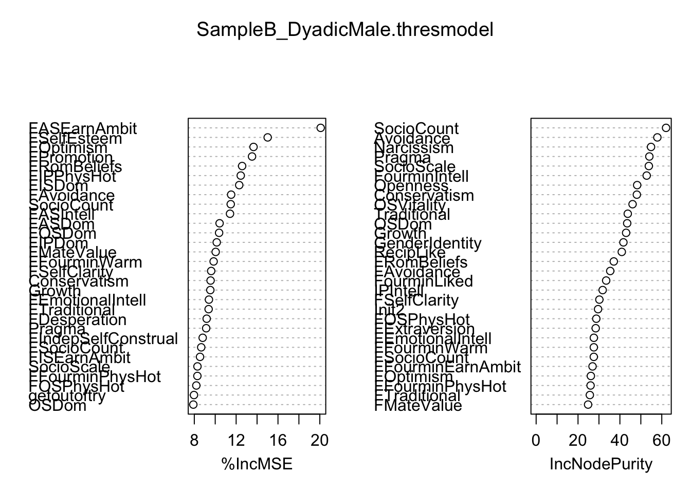
#Sample B Male Dyadic model, interpretation variables
SampleB_DyadicMale.interpdata <- Background_MDyadic_SampleB[c(151,190,223)]
set.seed(605)
SampleB_DyadicMale.interpmodel <- randomForest(DiggingRel~., data=SampleB_DyadicMale.interpdata, importance=T, na.action=na.omit, ntree=5000)
SampleB_DyadicMale.interpmodel
Call:
randomForest(formula = DiggingRel ~ ., data = SampleB_DyadicMale.interpdata, importance = T, ntree = 5000, na.action = na.omit)
Type of random forest: regression
Number of trees: 5000
No. of variables tried at each split: 1
Mean of squared residuals: 1.666701
% Var explained: -1.5importance(SampleB_DyadicMale.interpmodel) %IncMSE IncNodePurity
FAvoidance 62.77790 110.94012
FASEarnAmbit 62.32409 76.08821varImpPlot(SampleB_DyadicMale.interpmodel)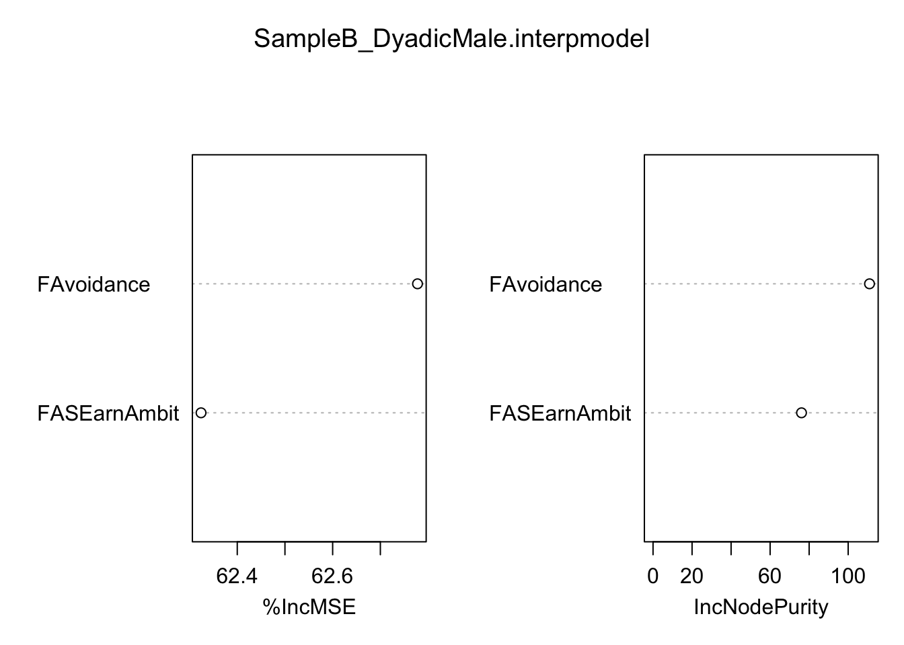
#Sample A Male Dyadic model, prediction variables
SampleB_DyadicMale.preddata <- Background_MDyadic_SampleB[c(151,190,223)]
set.seed(605)
SampleB_DyadicMale.predmodel <- randomForest(DiggingRel~., data=SampleB_DyadicMale.preddata, importance=T, na.action=na.omit, ntree=5000)
SampleB_DyadicMale.predmodel
Call:
randomForest(formula = DiggingRel ~ ., data = SampleB_DyadicMale.preddata, importance = T, ntree = 5000, na.action = na.omit)
Type of random forest: regression
Number of trees: 5000
No. of variables tried at each split: 1
Mean of squared residuals: 1.666701
% Var explained: -1.5importance(SampleB_DyadicMale.predmodel) %IncMSE IncNodePurity
FAvoidance 62.77790 110.94012
FASEarnAmbit 62.32409 76.08821varImpPlot(SampleB_DyadicMale.predmodel)
#Random Forest for Female Dyadic Desire, Sample A
Background_FDyadic_SampleA <- read.csv(file="Level 1 predicting Female Dyadic Desire, Sample A.csv", header=T)
set.seed(9845)
SampleA_DyadicFemale_VSURF <- VSURF(FDiggingRel~., data=Background_FDyadic_SampleA, na.action=na.omit, ntree=5000)Thresholding step
Estimated computational time (on one core): 370.6 sec.
|
| | 0%
|
|==== | 5%
|
|======= | 10%
|
|========== | 15%
|
|============== | 20%
|
|================== | 25%
|
|===================== | 30%
|
|======================== | 35%
|
|============================ | 40%
|
|================================ | 45%
|
|=================================== | 50%
|
|====================================== | 55%
|
|========================================== | 60%
|
|============================================== | 65%
|
|================================================= | 70%
|
|==================================================== | 75%
|
|======================================================== | 80%
|
|============================================================ | 85%
|
|=============================================================== | 90%
|
|================================================================== | 95%
|
|======================================================================| 100%
Interpretation step (on 11 variables)
Estimated computational time (on one core): between 1.9 sec. and 10.9 sec.
|
| | 0%
|
|====== | 9%
|
|============= | 18%
|
|=================== | 27%
|
|========================= | 36%
|
|================================ | 45%
|
|====================================== | 55%
|
|============================================= | 64%
|
|=================================================== | 73%
|
|========================================================= | 82%
|
|================================================================ | 91%
|
|======================================================================| 100%
Prediction step (on 1 variables)
Maximum estimated computational time (on one core): 0.2 sec.
|
| | 0%
|
|======================================================================| 100%Warning in VSURF.formula(FDiggingRel ~ ., data = Background_FDyadic_SampleA, : VSURF with a formula-type call outputs selected variables
which are indices of the input matrix based on the formula:
you may reorder these to get indices of the original datasummary(SampleA_DyadicFemale_VSURF)
VSURF computation time: 6.5 mins
VSURF selected:
11 variables at thresholding step (in 6.4 mins)
1 variables at interpretation step (in 7.1 secs)
1 variables at prediction step (in 0.2 secs)SampleA_DyadicFemale_VSURF$varselect.thres [1] 187 189 33 208 77 99 260 9 28 312 188SampleA_DyadicFemale_VSURF$varselect.interp[1] 187SampleA_DyadicFemale_VSURF$varselect.pred[1] 187ncol(Background_FDyadic_SampleA)[1] 363#Sample A Female Dyadic Model, no variable selection
set.seed(45)
Background_FDyadic_SampleA.allpredictors <- randomForest(FDiggingRel~., data=Background_FDyadic_SampleA, importance=T, na.action=na.omit, ntree=5000)
Background_FDyadic_SampleA.allpredictors
Call:
randomForest(formula = FDiggingRel ~ ., data = Background_FDyadic_SampleA, importance = T, ntree = 5000, na.action = na.omit)
Type of random forest: regression
Number of trees: 5000
No. of variables tried at each split: 120
Mean of squared residuals: 2.297734
% Var explained: -11.46importance(Background_FDyadic_SampleA.allpredictors) %IncMSE IncNodePurity
Anxiety 0.442376028 6.571144
Avoidance -1.485457701 5.252142
SocioCount 0.095690039 8.232888
SocioScale -1.417024372 8.564118
MateValue 0.054133559 5.019280
ASIBS -1.984369622 5.612822
ASIHS 0.269778582 6.339278
Lim -1.040487646 6.419852
Traditional 1.635743989 5.569686
SexDrive -0.988030296 5.402008
Conservatism 1.346901188 5.116747
PartnerConserv -1.984291157 5.457090
RecipLike -0.440152504 7.855982
Desperation -0.097116732 5.821975
Destiny -3.474979626 6.920486
Growth -1.990570267 6.149589
SelfClarity 0.561257492 5.957102
IdealSelfClarity -2.150937905 6.369153
NeedBelong -2.253620318 7.063542
ApproachGoal -1.039743755 5.070877
AvoidGoal -1.625154954 4.316033
Forgiveness -2.228927482 6.686263
Lonely -0.215595826 5.494762
SelfEsteem -0.001692638 4.602344
SelfControl -2.675931539 7.057717
SWBTot 2.224226951 7.202059
SelfRespect -0.292632629 4.627429
Entitlement 3.856623536 6.491253
RelatSelfConstrual -2.315086672 4.888236
IndepSelfConstrual -1.424819947 3.471647
RISC -0.758151372 4.279477
CISC 2.525415609 5.407620
RejectionSen 1.597208344 5.216405
IDSTot 0.078269336 6.442822
WITot -1.371701328 5.296654
ISWTot -0.475369925 4.609385
ComTot -1.971337102 7.148253
Narcissism 1.570263328 7.091295
Promotion 0.039421882 4.181180
Prevention -0.480034139 5.488851
EmoExpression -1.431736593 4.585451
Locomotion 1.231600889 6.931561
Assessment -1.346444006 6.302653
Capitalization -2.089070310 5.461240
Extraversion 0.890663806 4.883163
Agreeable -2.603451857 4.907749
Conscientious -2.058980436 5.230562
Neurotic 2.529650440 6.836638
Openness 2.172544922 5.514769
ASPhysHot 0.652823366 5.149545
ASEarnAmbit -0.148136543 3.754745
ASVitality 1.164811066 4.586003
ASWarm -1.126164525 4.282324
ASDom -1.530510688 4.225782
ISPhysHot 3.547955060 3.487369
ISEarnAmbit -0.692173948 3.096584
ISVitality 1.972711974 2.880944
ISWarm -0.940060316 3.910960
ISDom -2.653830663 4.065600
IPPhysHot 0.070760861 4.307544
IPEarnAmbit 0.589374099 5.619950
IPVitality -3.584284062 3.959473
IPWarm -2.933628150 3.320330
IPDom -2.878700584 4.243877
FourminPhysHot 0.195743054 3.812529
FourminEarnAmbit 0.690241606 7.055573
FourminVitality 0.757035239 5.230975
FourminWarm -1.054806510 8.266617
FourminDom 1.664561767 6.229256
FourminLiked -0.638583564 4.268064
FourminChemistry -3.754351792 5.751170
FourminpLiked -2.045845342 4.849510
DesirSer -1.410931742 4.003509
DesirCas -0.634365204 4.073800
DesirOne -1.672904187 4.515657
SatPeop -0.598632709 3.386506
YouInt_1 4.013092619 6.903745
ThemInt_1 -2.048009814 5.087279
Init1 -1.311868718 3.745030
Init2 -3.132282577 3.629406
Init3 -1.764773386 3.440197
MStrat1 0.558405562 4.392164
MStrat2 1.265861377 3.622026
MStrat3 -0.032534532 3.673098
MStrat4 -1.200347034 3.172045
MStrat5 -1.295043180 4.344941
MStrat6 -1.276347405 3.459475
MStrat7 -1.640069160 4.209277
MStrat8 -2.022120671 4.560363
Gender1 1.455765038 3.665745
Gender2 -1.776393756 3.651913
SexOr -2.229781130 2.019344
Pragma -1.557908915 4.439599
Ludus -0.153950803 3.806355
Storge -1.147853906 4.179354
MyStatus -0.170125241 3.141383
Reci3 -0.267952477 3.939120
Reci4 -4.836194896 5.014627
Health 4.688644324 4.458456
Sleep -1.108100153 4.127192
PA1 2.262810834 2.973390
PA2 -0.158055066 2.526998
PA3 2.532277629 3.556507
NA1 0.465464824 3.729376
NA2 -0.739609546 4.345502
NA3 -2.168870531 3.898418
SVal1 -2.106841271 3.917417
SVal2 -1.583551027 1.795697
SVal3 -0.449122252 3.604189
SVal4 -2.222594483 2.928244
SVal5 -2.486776424 3.543888
SVal6 -1.194341427 2.966884
SVal7 -1.108804745 3.520771
SVal8 -0.052453967 3.425154
SVal9 2.421177779 5.041315
SVal10 0.627472712 4.072220
SVal11 -1.996573629 4.600014
SVal12 0.669552132 2.647270
SVal13 -1.738401356 3.683443
SVal14 -1.877735372 4.456029
SVal15 -3.278514409 2.068962
SVal16 -0.567503686 2.509478
SVal17 -1.484148764 4.012147
AS12 -2.271024295 3.204162
AS13 -1.877759854 3.015185
AS14 -0.788907081 4.743361
AS15 -1.710529640 3.217478
AS16 0.153287621 3.719476
AS17 0.011849186 3.469867
AS18 3.365847625 4.109987
AS19 -1.364920902 3.024387
AS20 0.475110028 3.964484
AS21 -2.165245515 2.715659
AS22 -1.749355546 4.508639
AS23 0.382391542 3.762909
AS24 -2.804588952 3.162407
AS25 0.243918265 3.155196
AS26 -4.372696385 4.539790
AS27 0.321999491 4.097232
AS28 -2.069172851 3.048875
AS29 -1.259594673 4.760665
AS30 1.073573518 2.714693
AS31 0.204154191 3.217005
AS32 -3.325822975 3.187915
IP17 -1.167397880 3.438094
IP18 0.146043094 2.932708
IP19 1.171137380 4.009256
IP20 1.665273963 3.117374
IP21 -2.156330656 2.401386
IP22 -1.606327796 3.229501
IP23 0.347148056 3.500902
IP24 0.372037424 3.444354
IP25 0.899877794 2.510873
IP26 -0.916843363 2.716627
IP27 -1.365665152 2.890005
IP28 0.811716737 3.122308
IP29 -0.629741157 4.536594
IP30 -1.432720747 2.322709
IP31 -0.052871430 5.039856
IP32 -2.679310628 2.881267
IS17 -2.189322807 3.234734
IS18 -1.747287667 2.344287
IS19 -2.056205363 2.258387
IS20 1.792142090 1.540866
IS21 0.162182985 1.577266
IS22 -1.125605643 3.726285
IS23 1.524349569 3.973229
IS24 -0.065886378 2.587313
IS25 2.729600952 2.183237
IS26 -0.989370410 3.983513
IS27 -1.087776343 3.305235
IS28 -1.093784479 4.678642
IS29 -1.076177161 4.272758
IS30 -0.226521691 2.137381
IS31 -0.375306122 2.747249
IS32 -1.586619198 3.013942
X.4min12 0.067920120 4.393551
FAnxiety -0.296204389 7.245383
FAvoidance -5.151630849 6.946468
FSocioCount 0.537300350 8.093820
FSocioScale -1.728313654 5.701949
FMateValue -0.952662506 6.156792
FASIBS -1.041549942 7.000009
FASIHS -2.889825700 4.698394
FLim 0.573847828 7.004439
FTraditional -2.585920725 5.146042
FSexDrive 8.142516017 7.889770
FConservatism 2.260766998 6.007702
FPartnerConserv 2.170987436 8.157380
FRecipLike -4.088772675 5.446024
FDesperation -1.848715557 5.856980
FDestiny -2.453327792 7.578433
FGrowth -3.227878353 6.820716
FSelfClarity -4.867243250 6.916015
FIdealSelfClarity 2.528521315 7.580574
FNeedBelong -3.780071521 6.576001
FApproachGoal -3.968141184 5.023199
FAvoidGoal -1.396392682 7.893708
FForgiveness -2.607119350 7.228516
FLonely -1.172066218 6.518642
FSelfEsteem -2.787744580 5.598080
FSelfControl -2.309427029 6.921679
FSWBTot -2.729708889 4.580030
FSelfRespect -0.723053238 5.669415
FEntitlement -4.138637941 8.158250
FRelatSelfConstrual -2.940739585 4.682618
FIndepSelfConstrual -1.489509747 4.412377
FRISC 1.528539103 8.212027
FCISC -1.731629262 5.169994
FRejectionSen -2.451383048 4.357048
FIDSTot -1.773630987 9.427359
FWITot -1.787661975 6.066689
FISWTot -5.425627823 5.369524
FComTot -2.805867057 6.183670
FNarcissism -0.142723780 5.743314
FPromotion -3.934123301 4.082058
FPrevention -0.472597911 4.544917
FEmoExpression -4.742375107 3.900258
FLocomotion 0.646466724 5.184695
FAssessment -2.150030788 6.929361
FCapitalization -1.445949788 4.335690
FExtraversion 0.500103323 5.549275
FAgreeable -2.191497586 5.785922
FConscientious 1.897050523 5.339644
FNeurotic -4.032745253 7.438545
FOpenness -1.368940668 3.916686
FASPhysHot 0.424626492 6.491894
FASEarnAmbit -0.146142451 5.497844
FASVitality 0.403207087 4.148844
FASWarm -1.989481477 5.385791
FASDom -2.387310086 4.340723
FISPhysHot -1.138957106 3.977120
FISEarnAmbit -0.446434558 2.825751
FISVitality -0.806402780 2.961541
FISWarm -3.045595097 3.981535
FISDom -2.098766232 5.269597
FIPPhysHot 0.674038732 5.622002
FIPEarnAmbit 1.336968170 3.822244
FIPVitality -1.630239145 2.538954
FIPWarm 1.717537735 4.410874
FIPDom 0.154376181 4.171000
FFourminPhysHot -0.181934344 6.289798
FFourminEarnAmbit -2.034672205 5.373825
FFourminVitality -4.075647668 4.164552
FFourminWarm -3.787172738 6.882208
FFourminDom -0.758053620 4.216600
FFourminLiked -2.924213502 4.388255
FFourminChemistry -3.626680273 5.180158
FFourminpLiked -2.465911972 4.806682
FDesirSer -2.785285550 3.361417
FDesirCas -0.326186909 3.772804
FDesirOne 0.053007887 2.613381
FSatPeop -5.394661190 3.463625
FYouInt_1 -1.068360355 4.974072
FThemInt_1 -2.827083303 5.747319
FInit1 -0.855100701 2.621024
FInit2 -0.982352196 4.264550
FInit3 0.830112695 3.444804
FMStrat1 1.314292869 4.538167
FMStrat2 2.271242770 8.905496
FMStrat3 -0.731355482 3.743096
FMStrat4 -1.294792027 2.458986
FMStrat5 0.826340788 2.744348
FMStrat6 -0.071778023 4.361266
FMStrat7 -1.707244023 2.961447
FMStrat8 -3.867409813 3.841843
FGender1 -0.851244661 4.456772
FGender2 -2.219209576 3.936359
FSexOr 1.781749079 3.207095
FPragma -1.726711164 3.765548
FLudus -2.808440858 4.840686
FStorge -2.887871644 4.435394
FMyStatus -0.099142318 3.647959
FReci3 -0.518664900 3.620289
FReci4 -2.342140309 3.533405
FHealth -2.395043981 3.515465
FSleep -2.414999135 3.976081
FPA1 -2.632402325 2.384871
FPA2 0.285388679 2.051808
FPA3 -2.646743387 3.050188
FNA1 0.661646165 4.386276
FNA2 -0.630211153 3.674877
FNA3 -0.269466164 3.584493
FSVal1 0.273390004 2.713432
FSVal2 2.764949762 2.191515
FSVal3 0.415729827 2.877936
FSVal4 -1.185880575 2.679915
FSVal5 -0.272230509 2.754229
FSVal6 -0.031476144 1.976272
FSVal7 2.998764170 3.561840
FSVal8 -1.028874509 3.806620
FSVal9 -3.759229054 4.328716
FSVal10 -2.246311515 4.094627
FSVal11 0.759310552 4.153166
FSVal12 0.896766313 2.494689
FSVal13 0.009179941 2.617675
FSVal14 0.282936645 5.494801
FSVal15 0.327902216 2.393492
FSVal16 -2.482627597 3.208148
FSVal17 -2.468007050 4.116113
FAS12 -1.999356807 2.244965
FAS13 -2.006180396 4.356528
FAS14 -0.533266205 4.550089
FAS15 0.313751919 4.776879
FAS16 -4.476364142 3.825029
FAS17 -1.869057636 5.011180
FAS18 -3.183530750 4.236724
FAS19 -3.058792272 3.645842
FAS20 -0.288564783 3.091157
FAS21 -2.517883918 3.082129
FAS22 1.992229575 5.536165
FAS23 1.458837721 3.793964
FAS24 -3.088854990 3.036683
FAS25 -1.345814439 4.531678
FAS26 -2.292140231 4.133355
FAS27 -1.994758812 4.328597
FAS28 -0.838054412 4.083057
FAS29 -3.519251363 4.133802
FAS30 -2.124292836 3.393703
FAS31 -3.387785850 5.837633
FAS32 0.337519811 3.644174
FIS17 -1.696320595 2.684809
FIS18 -0.806814061 3.068197
FIS19 -4.653035737 4.644316
FIS20 -1.107075969 1.601512
FIS21 -3.249102213 2.456406
FIS22 -1.300823095 2.683737
FIS23 -0.839766223 2.140464
FIS24 -2.531498056 2.723032
FIS25 -0.481501868 1.840823
FIS26 -3.546775581 2.912575
FIS27 -2.252102264 4.641036
FIS28 -3.180273790 2.434327
FIS29 -1.616288574 4.681253
FIS30 -0.679363262 1.853036
FIS31 -0.875499415 2.341795
FIS32 -0.174239303 1.817439
FIP17 -1.571248945 3.808028
FIP18 -1.426945373 3.001193
FIP19 0.120080743 3.391724
FIP20 -0.921300787 2.341590
FIP21 -0.112592456 5.197009
FIP22 -0.301690143 2.472736
FIP23 -1.159126723 2.224423
FIP24 -3.558829110 3.364343
FIP25 -1.861734369 2.561994
FIP26 -0.533022350 3.254396
FIP27 -0.095821722 3.113383
FIP28 -1.120864349 3.236110
FIP29 -3.611032962 4.660443
FIP30 0.958481001 1.364386
FIP31 1.238417460 2.483943
FIP32 -0.174650345 3.461569
F4min12 -0.843775079 3.882072
IP12 -0.393986922 2.941168
FIP12 -0.241098996 1.791432
IS12 -2.503555659 1.360474
FIS12 0.137725689 1.007297
statustot -2.191777846 6.778124
Fstatustot -1.582856463 7.228976
attracttot 0.321975515 8.585109
Fattracttot -3.406388188 4.870682varImpPlot(Background_FDyadic_SampleA.allpredictors)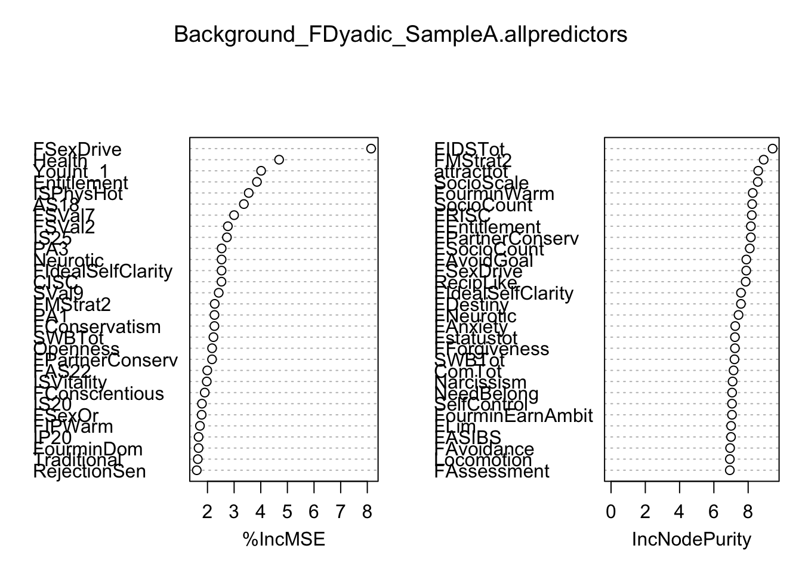
#Sample A Female Dyadic model, threshold variables
SampleA_DyadicFemale.thresdata <- Background_FDyadic_SampleA[c(187,189,260,99,77,26,33,208,49,312,9,188,361,28,290,48,285,83,238,180,340,167,224,130,195,237,5,159,55,269,57,52,69,222,169,101,53,132,129,363)]
set.seed(9845)
SampleA_DyadicFemale.thresmodel <- randomForest(FDiggingRel~., data=SampleA_DyadicFemale.thresdata, importance=T, na.action=na.omit, ntree=5000)
SampleA_DyadicFemale.thresmodel
Call:
randomForest(formula = FDiggingRel ~ ., data = SampleA_DyadicFemale.thresdata, importance = T, ntree = 5000, na.action = na.omit)
Type of random forest: regression
Number of trees: 5000
No. of variables tried at each split: 13
Mean of squared residuals: 2.087282
% Var explained: -1.54importance(SampleA_DyadicFemale.thresmodel) %IncMSE IncNodePurity
FSexDrive 15.787468 62.16591
FPartnerConserv 10.019092 59.29523
FMStrat2 9.132115 59.42746
Health 16.912993 34.69564
YouInt_1 8.261466 49.77730
SWBTot 14.923394 49.29931
RejectionSen 9.431137 42.23457
FRISC 6.376356 78.89612
Openness 10.424048 43.40570
FAS23 17.619357 47.54498
Traditional 12.228811 49.50018
FConservatism 12.927767 57.43368
attracttot 11.884154 52.05098
Entitlement 7.759573 50.77328
FSVal7 12.950305 43.73040
Neurotic 11.575327 49.33401
FSVal2 11.283560 20.86208
MStrat2 8.613545 34.34765
FIPEarnAmbit 15.984602 48.39837
FSocioCount 6.915480 76.38407
FIP19 10.526367 39.84830
IS23 12.471867 28.46382
FConscientious 8.870073 58.29569
AS18 7.821678 34.97722
FIdealSelfClarity 5.891396 69.51965
FIPPhysHot 14.295827 66.94172
MateValue 7.036646 44.14808
IP31 9.188990 28.81640
ISPhysHot 9.256921 33.60211
FSexOr 16.112482 33.81466
ISVitality 13.605459 29.57176
ASVitality 10.061385 37.42555
FourminDom 7.350073 45.48902
FExtraversion 14.443894 62.06529
IS25 9.463039 23.42971
PA1 10.621133 29.03752
ASWarm 11.323655 42.74876
AS20 9.340416 31.01704
AS17 5.938358 30.93300varImpPlot(SampleA_DyadicFemale.thresmodel)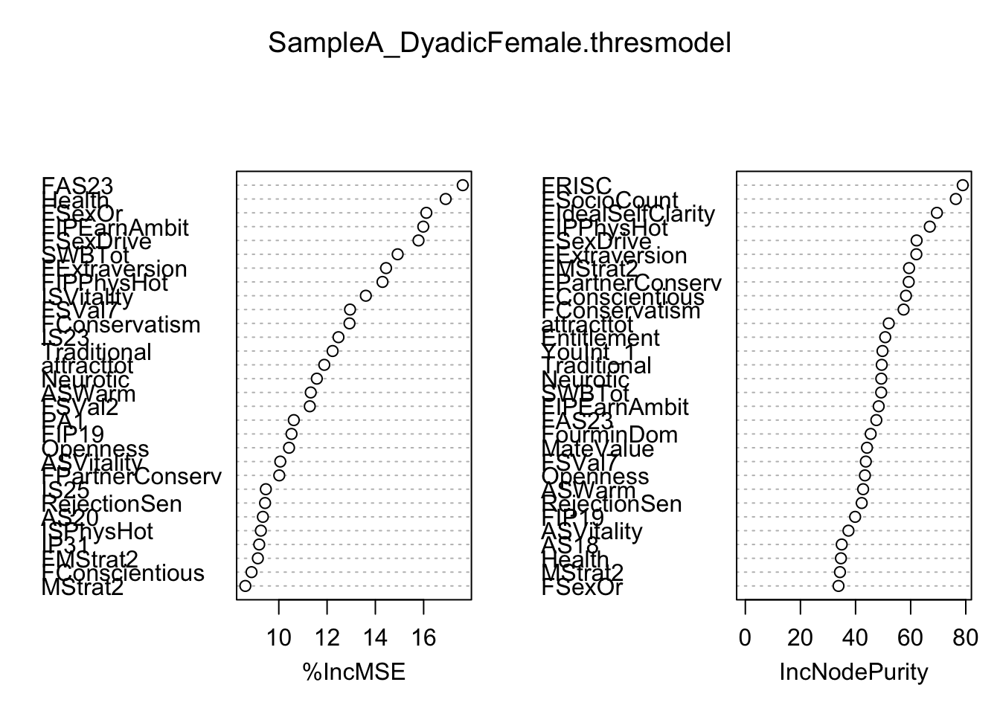
#Sample A Female Dyadic model, interpretation variables
SampleA_DyadicFemale.interpdata <- Background_FDyadic_SampleA[c(187,189,260,99,77,26,33,208,49,312,9,188,361,28,290,48,285,83,238,180,363)]
set.seed(9845)
SampleA_DyadicFemale.interpmodel <- randomForest(FDiggingRel~., data=SampleA_DyadicFemale.interpdata, importance=T, na.action=na.omit, ntree=5000)
SampleA_DyadicFemale.interpmodel
Call:
randomForest(formula = FDiggingRel ~ ., data = SampleA_DyadicFemale.interpdata, importance = T, ntree = 5000, na.action = na.omit)
Type of random forest: regression
Number of trees: 5000
No. of variables tried at each split: 6
Mean of squared residuals: 2.075422
% Var explained: -0.96importance(SampleA_DyadicFemale.interpmodel) %IncMSE IncNodePurity
FSexDrive 19.297464 92.67374
FPartnerConserv 12.207715 85.99697
FMStrat2 11.769454 86.20659
Health 20.244889 63.47636
YouInt_1 9.588100 95.40880
SWBTot 19.674152 97.74300
RejectionSen 14.452229 85.50652
FRISC 15.339303 116.33862
Openness 13.317926 93.44941
FAS23 14.311816 80.61082
Traditional 18.855210 95.24260
FConservatism 14.233682 83.35074
attracttot 21.217230 94.82065
Entitlement 9.677163 94.85830
FSVal7 22.268920 70.66007
Neurotic 12.890484 93.86163
FSVal2 15.535882 33.27069
MStrat2 14.653458 70.44007
FIPEarnAmbit 16.831620 80.85601
FSocioCount 8.129228 113.52473varImpPlot(SampleA_DyadicFemale.interpmodel)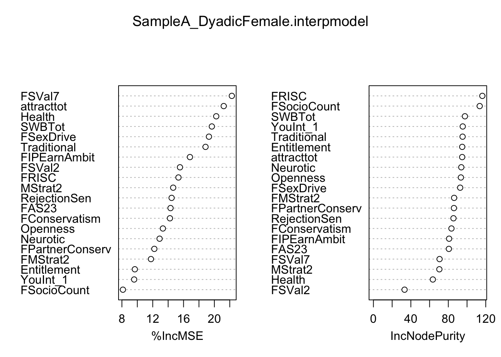
#Sample A Female Dyadic model, prediction variables
SampleA_DyadicFemale.preddata <- Background_FDyadic_SampleA[c(187,99,285,363)]
set.seed(9845)
SampleA_DyadicFemale.predmodel <- randomForest(FDiggingRel~., data=SampleA_DyadicFemale.preddata, importance=T, na.action=na.omit, ntree=5000)
SampleA_DyadicFemale.predmodel
Call:
randomForest(formula = FDiggingRel ~ ., data = SampleA_DyadicFemale.preddata, importance = T, ntree = 5000, na.action = na.omit)
Type of random forest: regression
Number of trees: 5000
No. of variables tried at each split: 1
Mean of squared residuals: 2.028514
% Var explained: 1.32importance(SampleA_DyadicFemale.predmodel) %IncMSE IncNodePurity
FSexDrive 34.08635 71.27202
Health 55.49110 65.10888
FSVal2 52.83200 35.34019varImpPlot(SampleA_DyadicFemale.predmodel)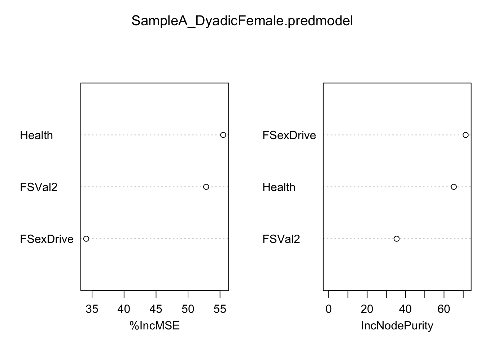
#Random Forest for Female Dyadic Desire, Sample B
Background_FDyadic_SampleB <- read.csv(file="Level 1 predicting Female Dyadic Desire, Sample B.csv", header=T)
Background_FDyadic_SampleB$getoutoffun <- factor(Background_FDyadic_SampleB$getoutoffun)
Background_FDyadic_SampleB$getoutoftry <- factor(Background_FDyadic_SampleB$getoutoftry)
Background_FDyadic_SampleB$getoutofmeet <- factor(Background_FDyadic_SampleB$getoutofmeet)
Background_FDyadic_SampleB$getoutofscience <- factor(Background_FDyadic_SampleB$getoutofscience)
Background_FDyadic_SampleB$getoutofltfind <- factor(Background_FDyadic_SampleB$getoutofltfind)
Background_FDyadic_SampleB$getoutofstfind <- factor(Background_FDyadic_SampleB$getoutofstfind)
Background_FDyadic_SampleB$Fgetoutoffun <- factor(Background_FDyadic_SampleB$Fgetoutoffun)
Background_FDyadic_SampleB$Fgetoutoftry <- factor(Background_FDyadic_SampleB$Fgetoutoftry)
Background_FDyadic_SampleB$Fgetoutofmeet <- factor(Background_FDyadic_SampleB$Fgetoutofmeet)
Background_FDyadic_SampleB$Fgetoutofscience <- factor(Background_FDyadic_SampleB$Fgetoutofscience)
Background_FDyadic_SampleB$Fgetoutofltfind <- factor(Background_FDyadic_SampleB$Fgetoutofltfind)
Background_FDyadic_SampleB$Fgetoutofstfind <- factor(Background_FDyadic_SampleB$Fgetoutofstfind)
set.seed(9845)
SampleB_DyadicFemale_VSURF <- VSURF(FDiggingRel~., data=Background_FDyadic_SampleB, na.action=na.omit, ntree=5000)Thresholding step
Estimated computational time (on one core): 371.9 sec.
|
| | 0%
|
|==== | 5%
|
|======= | 10%
|
|========== | 15%
|
|============== | 20%
|
|================== | 25%
|
|===================== | 30%
|
|======================== | 35%
|
|============================ | 40%
|
|================================ | 45%
|
|=================================== | 50%
|
|====================================== | 55%
|
|========================================== | 60%
|
|============================================== | 65%
|
|================================================= | 70%
|
|==================================================== | 75%
|
|======================================================== | 80%
|
|============================================================ | 85%
|
|=============================================================== | 90%
|
|================================================================== | 95%
|
|======================================================================| 100%
Interpretation step (on 1 variables)
Estimated computational time (on one core): between 0.2 sec. and 0.2 sec.
|
| | 0%
|
|======================================================================| 100%
Prediction step (on 1 variables)
Maximum estimated computational time (on one core): 0.3 sec.
|
| | 0%Warning in VSURF_pred.default(x = x, y = y, ntree.pred = ntree.pred, err.interp = interp$err.interp, : Unable to perform prediction step, because the interpretation step
did not eliminate variablesWarning in VSURF.formula(FDiggingRel ~ ., data = Background_FDyadic_SampleB, : VSURF with a formula-type call outputs selected variables
which are indices of the input matrix based on the formula:
you may reorder these to get indices of the original datasummary(SampleB_DyadicFemale_VSURF)
VSURF computation time: 6.5 mins
VSURF selected:
0 variables at thresholding step (in 6.5 mins)
1 variables at interpretation step (in 0.4 secs)
0 variables at prediction step (in 0.1 secs)SampleB_DyadicFemale_VSURF$varselect.thres[1] 193SampleB_DyadicFemale_VSURF$varselect.interp[1] 193SampleB_DyadicFemale_VSURF$varselect.predNULLncol(Background_FDyadic_SampleB)[1] 223#Sample B Female Dyadic Model, no variable selection
set.seed(45)
Background_FDyadic_SampleB.allpredictors <- randomForest(FDiggingRel~., data=Background_FDyadic_SampleB, importance=T, na.action=na.omit, ntree=5000)
Background_FDyadic_SampleB.allpredictors
Call:
randomForest(formula = FDiggingRel ~ ., data = Background_FDyadic_SampleB, importance = T, ntree = 5000, na.action = na.omit)
Type of random forest: regression
Number of trees: 5000
No. of variables tried at each split: 74
Mean of squared residuals: 2.025799
% Var explained: -18.5importance(Background_FDyadic_SampleB.allpredictors) %IncMSE IncNodePurity
DesirLT -4.66337451 4.6932914
DesirST -2.14415575 8.5696539
getoutoffun -2.39158947 1.2323719
getoutoftry -2.17491367 0.5900802
getoutofmeet 0.50198603 0.6604795
getoutofscience -2.10670852 1.7948434
getoutofltfind -2.00984375 2.0305656
getoutofstfind -0.99209040 1.6404288
SatPeop -3.10018857 3.7173600
YouInt_1 -4.05137870 8.9515611
ThemInt_1 -1.27630538 8.4188494
MStrat3 -5.01377882 5.9351869
MStrat4 -1.72889796 5.3871637
Init1 -2.79054093 3.8107074
Init2 -3.78625572 4.8929337
Init3 -0.92511899 6.6401515
ASI2 -3.52117693 6.1972319
ASI6 -2.35852865 6.5702738
SexOr -0.32825562 2.4949401
Pragma -2.00920133 8.1798957
Ludus -3.24640513 6.0858563
Storge -3.18733917 5.2889787
Status2 -2.24282792 6.5040110
Reci3 -3.52224500 5.1489040
Reci4 -3.80715602 6.0715153
NtB1 -4.49988176 6.5718019
Sleep -1.19452900 6.3262935
NUBelong -6.10658119 6.0929251
SR1 -1.96393636 4.5868396
Affect1 -2.23133406 4.5645257
Affect2 -4.18758007 5.4763861
Affect3 -1.86660114 5.6438600
Affect4 -1.79275112 6.2256587
Loco1 -3.41124873 5.8752062
Ass1 -5.71141761 4.8536028
HOC1 -0.79909501 4.5372824
v4minI8 -5.44022967 8.5303895
v4minI9 -4.29181377 4.4287896
FDesirLT -0.89775477 5.2363419
FDesirST -4.22456985 6.0191300
Fgetoutoffun -1.71202596 0.7322042
Fgetoutoftry -2.58494502 0.3818015
Fgetoutofmeet 0.15651250 0.2083529
Fgetoutofscience -2.37671266 1.6503287
Fgetoutofltfind 0.78315602 2.1650783
Fgetoutofstfind 0.00574252 1.7411350
FSatPeop -2.88120048 5.2344675
FYouInt_1 0.66975186 9.1549164
FThemInt_1 -2.19524106 9.5184977
FMStrat3 -2.56530884 2.9068853
FMStrat4 -1.57001079 3.1949313
FInit1 0.74088457 4.4500107
FInit2 -0.57033468 6.6851179
FInit3 -3.78517104 6.2650954
FASI2 -3.22430857 7.3785554
FASI6 -4.02567527 6.6604581
FSexOr -4.50492179 4.8401352
FPragma -4.51306302 13.0410248
FLudus -2.19898401 6.8798545
FStorge -3.27586949 6.3557102
FStatus2 -6.74760496 8.4751172
FReci3 -1.79565952 5.4038930
FReci4 -1.98910906 7.3285735
FNtB1 -2.59364092 5.5319307
FSleep -2.35550766 7.7048455
FNUBelong -1.68509431 5.4606983
FSR1 -0.88000898 3.5462346
FAffect1 -2.67042030 3.6489198
FAffect2 -3.35466864 5.0072456
FAffect3 -3.51040901 5.1782800
FAffect4 -5.79670028 6.1418564
FLoco1 -1.63770349 4.7149210
FAss1 -1.49673364 4.6583640
FHOC1 -1.72791573 2.8286568
Fv4minI8 -5.45201974 6.8016689
Fv4minI9 -1.44617477 3.0850895
Anxiety -4.90555025 11.9146281
Avoidance -3.29499388 10.7209896
SocioCount -4.00953154 13.0211307
SocioScale -2.22186856 10.9353316
MateValue -5.30162770 9.1491799
GenderIdentity -1.72632059 7.6218556
Traditional -4.46035514 10.2052873
SexDrive -2.04539782 7.0716119
AdversarialBeliefs -4.68950564 7.1400708
EmotionalIntell -3.73459988 8.8580237
Conservatism -5.04441696 8.4008374
PartnerConserv -2.78295416 7.4888333
RecipLike -4.11299489 9.0105707
Desperation -3.49644774 8.9063250
Destiny -4.33735054 9.2976361
Growth -4.48233805 7.7155481
SelfClarity -4.80898275 9.4951132
ApproachGoal -0.36156123 5.9623356
AvoidGoal -3.29865423 8.4306141
Forgiveness -4.75431206 10.2080592
Lonely -3.90536081 9.3858789
SelfEsteem -4.52177975 9.4250169
SelfControl -3.41944554 9.4355544
SWBTot -5.92040700 8.0564032
RelatSelfConstrual -3.53485397 7.9211181
IndepSelfConstrual -1.29309872 6.9824554
RejectionSen -4.92528052 8.7885889
Narcissism -3.19089805 11.2414571
Promotion -1.13941042 11.1067729
Prevention -4.84992527 11.0353115
LoveBasis -3.86077946 8.4096703
RomBeliefs -3.27337132 10.5957448
SocAnxiety -4.17618701 9.5615969
Optimism -3.89694855 7.7622753
Extraversion -8.21240199 12.8794805
Agreeable -2.91059946 9.2360758
Conscientious -3.40175471 10.6344504
Neurotic -5.29698268 14.8017657
Openness -5.65481787 9.4112732
ASPhysHot -4.81255965 7.6864335
ASEarnAmbit -3.20599510 8.8639615
ASVitality -4.28143107 7.8116192
ASWarm -2.78664838 7.2030695
ASDom -1.44702794 8.6546209
ASIntell -5.10014512 6.2313441
ASNegative -5.06457643 11.2183884
ISPhysHot -3.87947755 5.1741823
ISEarnAmbit 0.44181472 4.8243458
ISVitality -3.22457287 4.4820978
ISWarm -2.39783395 5.5670998
ISDom -3.67105850 7.3280783
ISIntell 0.25692278 2.7545197
OSPhysHot -1.18499002 7.6023049
OSEarnAmbit -3.31651683 6.3065626
OSVitality 0.58713975 6.4988446
OSWarm -2.53087827 6.3026165
OSDom -2.69876868 6.5956019
OSIntell -1.48013307 4.2809368
IPPhysHot -3.50425423 5.5248542
IPEarnAmbit -2.48847839 7.7236546
IPVitality -3.95044959 5.4375925
IPWarm -2.53641725 5.0972876
IPDom -2.97295351 7.1080054
IPIntell -4.18037765 5.1967727
FourminPhysHot -2.10937314 5.2612609
FourminEarnAmbit -3.27496935 11.9733469
FourminVitality -1.83771529 6.7979042
FourminWarm -3.64670550 10.1635325
FourminDom -3.66883468 9.0519080
FourminIntell -4.14845551 8.0305703
FourminLiked -3.20947655 6.4586820
FourminChemistry -2.30552962 8.2321170
FourminpLiked -0.64101895 7.0488030
FAnxiety -2.83955231 14.0725112
FAvoidance -7.46380371 13.9425250
FSocioCount -1.57576307 10.8865165
FSocioScale -3.41881644 9.1578556
FMateValue -6.20318666 10.9425330
FGenderIdentity -1.70484053 7.6742370
FTraditional -3.29811280 8.5646621
FSexDrive -5.48392514 9.3345165
FAdversarialBeliefs -3.06737535 6.7239271
FEmotionalIntell -4.10364350 9.0586696
FConservatism -4.63660813 7.0429485
FPartnerConserv -5.86307473 6.5945011
FRecipLike -2.84197257 8.2023772
FDesperation 1.03181518 8.8183954
FDestiny -4.05369576 11.9029838
FGrowth -2.62813175 10.9530227
FSelfClarity -7.12758592 11.4558620
FApproachGoal -5.65199690 7.7795913
FAvoidGoal -4.71221966 7.7620786
FForgiveness -4.16465581 10.6061156
FLonely -2.72208324 10.0412090
FSelfEsteem -0.44815668 8.3298243
FSelfControl -5.21097178 11.6301426
FSWBTot -1.85621362 6.5176629
FRelatSelfConstrual -2.81701235 10.4375135
FIndepSelfConstrual -1.22081639 6.1565056
FRejectionSen -1.94027104 8.7981597
FNarcissism -4.24897392 9.8031328
FPromotion -0.50701441 9.2706126
FPrevention -5.97046035 10.8462496
FLoveBasis -4.49563892 7.2287291
FRomBeliefs -5.29528640 11.4435869
FSocAnxiety -1.80082306 9.0916977
FOptimism -4.58684571 6.8998477
FExtraversion -4.95964600 10.1053530
FAgreeable -0.43811078 8.9481895
FConscientious -4.39999182 10.1739524
FNeurotic -2.51052445 11.1945932
FOpenness -2.26189446 8.7289674
FASPhysHot -5.25866040 7.2963275
FASEarnAmbit -2.53164246 8.2347134
FASVitality -0.93973819 6.8619554
FASWarm -3.22516187 7.3197421
FASDom 0.78553013 8.9385505
FASIntell -0.94223303 7.6509751
FASNegative -2.86943408 8.4289056
FISPhysHot -3.50871983 5.4588308
FISEarnAmbit -4.28285264 5.2632860
FISVitality -1.69270575 3.5601787
FISWarm -0.27101825 5.1599315
FISDom -4.20531722 6.5748594
FISIntell 0.17261158 3.3100216
FOSPhysHot -4.50564795 8.4861504
FOSEarnAmbit -0.29715524 3.0972549
FOSVitality -2.95492865 5.4477399
FOSWarm -2.30723952 4.0079924
FOSDom -2.41923224 6.5394268
FOSIntell -1.85910220 3.5810298
FIPPhysHot -0.70325307 6.2512926
FIPEarnAmbit -4.49235858 6.1472630
FIPVitality -0.57976519 4.7321736
FIPWarm -1.80157779 5.5661250
FIPDom -0.81912728 6.1629919
FIPIntell -2.68045492 5.2145708
FFourminPhysHot -4.89368505 11.4245801
FFourminEarnAmbit -6.87912247 9.1703159
FFourminVitality -2.47662708 6.0818563
FFourminWarm -5.19878958 10.0506500
FFourminDom -3.17752105 9.8983057
FFourminIntell -6.19280491 7.8956736
FFourminLiked -2.77231036 6.9116012
FFourminChemistry -1.46065121 9.2102682
FFourminpLiked -3.67943124 9.0987238varImpPlot(Background_FDyadic_SampleB.allpredictors)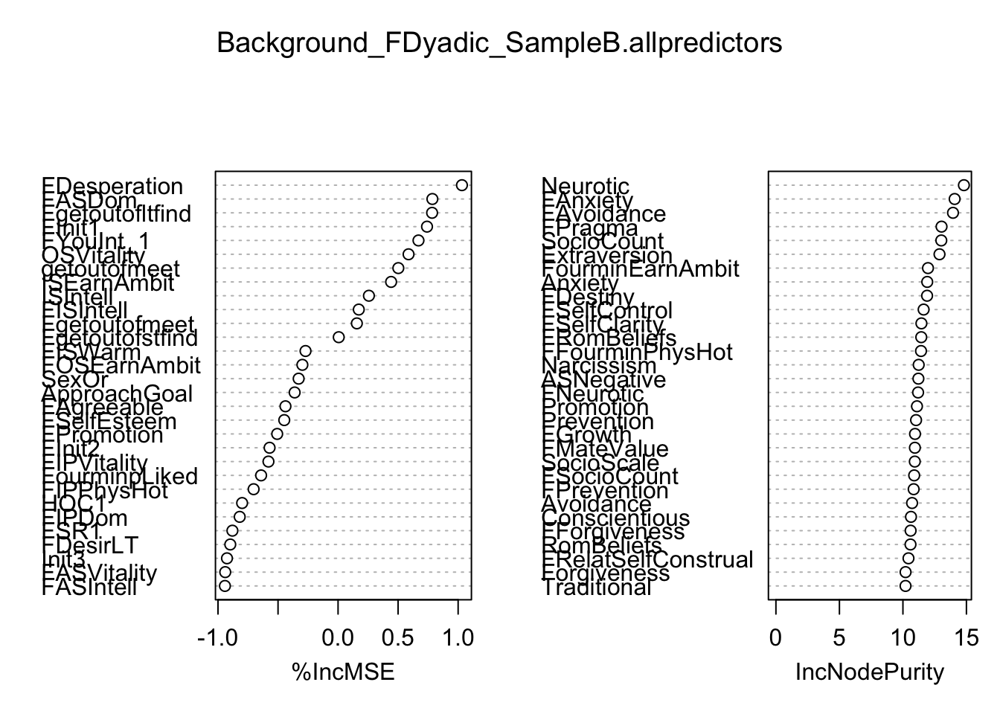
#Sample B Female Dyadic model, threshold variables
SampleB_DyadicFemale.thresdata <- Background_FDyadic_SampleB[c(223,193)]
set.seed(9845)
SampleB_DyadicFemale.thresmodel <- randomForest(FDiggingRel~., data=SampleB_DyadicFemale.thresdata, importance=T, na.action=na.omit, ntree=5000)
SampleB_DyadicFemale.thresmodel
Call:
randomForest(formula = FDiggingRel ~ ., data = SampleB_DyadicFemale.thresdata, importance = T, ntree = 5000, na.action = na.omit)
Type of random forest: regression
Number of trees: 5000
No. of variables tried at each split: 1
Mean of squared residuals: 1.764751
% Var explained: -2.66importance(SampleB_DyadicFemale.thresmodel) %IncMSE IncNodePurity
FASDom -41.57687 51.40539varImpPlot(SampleB_DyadicFemale.thresmodel)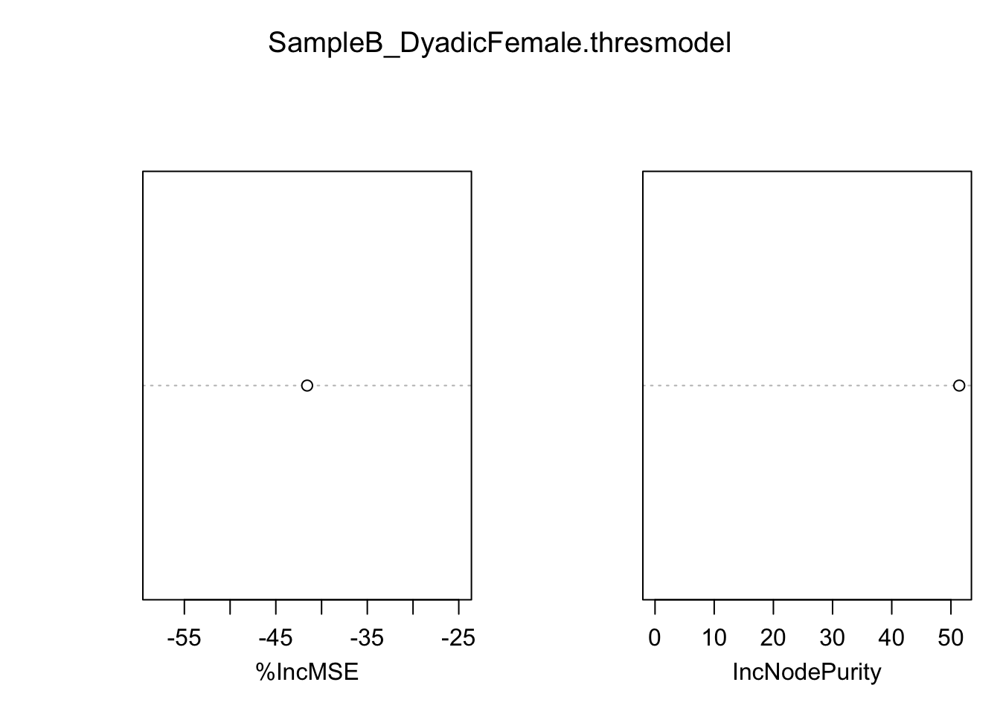
#Sample B Female Dyadic model, interpretation variables
SampleB_DyadicFemale.interpdata <- Background_FDyadic_SampleB[c(223,193)]
set.seed(9845)
SampleB_DyadicFemale.interpmodel <- randomForest(FDiggingRel~., data=SampleB_DyadicFemale.interpdata, importance=T, na.action=na.omit, ntree=5000)
SampleB_DyadicFemale.interpmodel
Call:
randomForest(formula = FDiggingRel ~ ., data = SampleB_DyadicFemale.interpdata, importance = T, ntree = 5000, na.action = na.omit)
Type of random forest: regression
Number of trees: 5000
No. of variables tried at each split: 1
Mean of squared residuals: 1.764751
% Var explained: -2.66importance(SampleB_DyadicFemale.interpmodel) %IncMSE IncNodePurity
FASDom -41.57687 51.40539varImpPlot(SampleB_DyadicFemale.interpmodel)